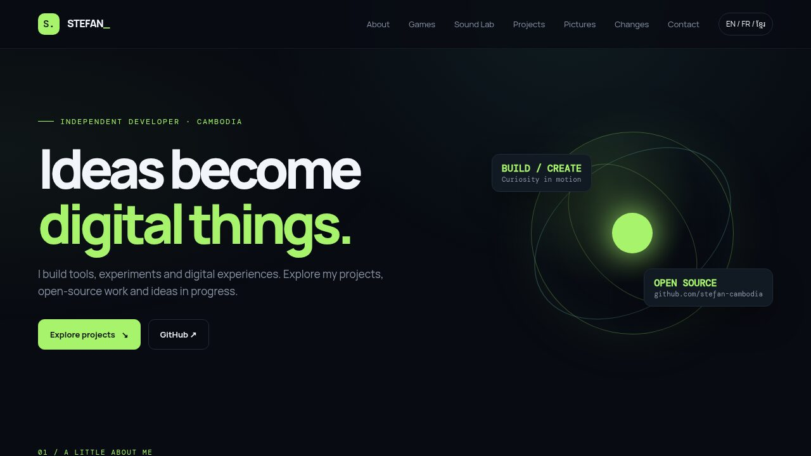

This websiteCe siteគេហទំព័រនេះ
The site you are reading. A portfolio in plain HTML, CSS and JavaScript, with no framework and no build step, hosted on GitHub Pages. The projects, their stars and the latest commits come live from GitHub, and every word switches between English, French and Khmer.
Le site que vous lisez. Un portfolio en HTML, CSS et JavaScript natifs, sans framework ni compilation, hébergé sur GitHub Pages. Les projets, leurs étoiles et les derniers commits arrivent en direct de GitHub, et chaque mot bascule entre anglais, français et khmer.
គេហទំព័រដែលអ្នកកំពុងអាន។ portfolio ដែលសរសេរដោយ HTML, CSS និង JavaScript ដើម គ្មាន framework និងគ្មានដំណាក់កាល build ហើយដាក់នៅលើ GitHub Pages។ គម្រោង ចំនួន stars និង commits ចុងក្រោយ ត្រូវបានទាញយកផ្ទាល់ពី GitHub ហើយរាល់ពាក្យទាំងអស់អាចប្តូររវាងភាសាអង់គ្លេស បារាំង និងខ្មែរ។

One file. Nothing to build.
The home page is a single file, index.html, with its markup, styles and script inside. There is no framework, no package to install and nothing to compile: the file your browser downloads is the file in the repository. Publishing is a push to the main branch, and GitHub Pages does the rest.
What can change on its own is read from GitHub when the page opens: the list of projects with their stars and forks, the number of public repositories and followers, and the latest commits. A new repository shows up in Projects without anyone touching the site.
What is on the page.
| Section | What it shows |
|---|---|
| About | A short introduction, with the number of public repositories and followers read from GitHub. |
| Games | Eight games, each with its own presentation page. |
| Sound Lab | Synth Rack, playable right in the page, and VSM Studio. |
| Projects | The other repositories, live from GitHub, with a search box and filters by platform, theme and language. |
| Pictures | Photo albums on Google Photos. |
| Last changes | The 20 latest commits across all the public repositories, grouped by day. |
| Contact | A link to GitHub. |
Small, but alive.
Live from GitHub
Projects, stars, forks and commits are read from the GitHub API in the visitor’s browser. Forks are left out, and a repository already shown in Games or the Sound Lab is not repeated in Projects.
Sorted by platform and theme
Each project carries a platform and a theme, set by hand in a small table. A repository that is not in it yet is classified from its name, description and topics.
Three languages
English, French and Khmer, for the interface and for the description of every game and project. The choice is remembered and carried over to the presentation pages.
Khmer set properly
Manrope and DM Mono have no Khmer glyphs, so Noto Sans Khmer takes over for Khmer text. On the presentation pages, letter-spacing is reset and the smallest labels are enlarged, so stacked vowels and subscript consonants stay readable.
The latest commits
The 20 most recent commits, grouped by day, with “today” and “yesterday” in the visitor’s language. Repositories are walked from the most recently pushed, and the walk stops once an older one cannot hold a newer commit. The result is kept for ten minutes.
A page per game and project
Seventeen presentation pages share one small stylesheet and one script, and follow the same plan: the idea, highlights, screenshots and how it is built, with links to the previous and next page.
Un seul fichier. Rien à compiler.
La page d’accueil tient dans un seul fichier, index.html, qui contient son balisage, ses styles et son script. Pas de framework, aucun paquet à installer, rien à compiler : le fichier que télécharge votre navigateur est celui du dépôt. Publier, c’est pousser sur la branche main ; GitHub Pages fait le reste.
Ce qui peut changer tout seul est lu sur GitHub à l’ouverture de la page : la liste des projets avec leurs étoiles et leurs forks, le nombre de dépôts publics et d’abonnés, et les derniers commits. Un nouveau dépôt apparaît dans Projets sans que personne ne touche au site.
Ce que contient la page.
| Section | Ce qu’elle montre |
|---|---|
| À propos | Une courte présentation, avec le nombre de dépôts publics et d’abonnés lu sur GitHub. |
| Jeux | Huit jeux, chacun avec sa page de présentation. |
| Sound Lab | Synth Rack, jouable directement dans la page, et VSM Studio. |
| Projets | Les autres dépôts, en direct de GitHub, avec une recherche et des filtres par plateforme, thème et langage. |
| Photos | Des albums sur Google Photos. |
| Derniers changements | Les 20 derniers commits de tous les dépôts publics, regroupés par jour. |
| Contact | Un lien vers GitHub. |
Petit, mais vivant.
En direct de GitHub
Projets, étoiles, forks et commits sont lus dans l’API GitHub, depuis le navigateur du visiteur. Les forks sont écartés, et un dépôt déjà présenté dans Jeux ou le Sound Lab n’est pas répété dans Projets.
Classés par plateforme et par thème
Chaque projet porte une plateforme et un thème, fixés à la main dans une petite table. Un dépôt qui n’y figure pas encore est classé d’après son nom, sa description et ses sujets.
Trois langues
Anglais, français et khmer, pour l’interface comme pour la description de chaque jeu et de chaque projet. Le choix est mémorisé et suit le visiteur sur les pages de présentation.
Le khmer bien composé
Manrope et DM Mono n’ont pas de glyphes khmers : Noto Sans Khmer prend le relais pour le texte khmer. Sur les pages de présentation, l’espacement des lettres est remis à zéro et les plus petites étiquettes sont agrandies, pour que voyelles et consonnes souscrites restent lisibles.
Les derniers commits
Les 20 commits les plus récents, regroupés par jour, avec « aujourd’hui » et « hier » dans la langue du visiteur. Les dépôts sont parcourus du plus récemment modifié au plus ancien, et le parcours s’arrête dès qu’un dépôt plus ancien ne peut plus contenir de commit plus récent. Le résultat est gardé dix minutes.
Une page par jeu et par projet
Dix-sept pages de présentation partagent une petite feuille de style et un script, et suivent le même plan : l’idée, les points forts, des captures et la construction, avec des liens vers la page précédente et la suivante.
ឯកសារតែមួយ។ គ្មានអ្វីត្រូវ build ទេ។
ទំព័រដើមស្ថិតនៅក្នុងឯកសារតែមួយគត់ គឺ index.html ដែលមានទាំង markup, styles និង script នៅខាងក្នុង។ គ្មាន framework គ្មាន package ត្រូវដំឡើង ហើយគ្មានអ្វីត្រូវ compile ទេ៖ ឯកសារដែល browser របស់អ្នកទាញយក គឺជាឯកសារដដែលនៅក្នុងឃ្លាំងកូដ។ ការបោះផ្សាយគ្រាន់តែជាការ push ទៅ branch main ហើយ GitHub Pages ធ្វើការងារដែលនៅសល់។
អ្វីដែលអាចផ្លាស់ប្តូរដោយខ្លួនឯង ត្រូវបានអានពី GitHub នៅពេលបើកទំព័រ៖ បញ្ជីគម្រោងជាមួយចំនួន stars និង forks ចំនួនឃ្លាំងកូដសាធារណៈ និងអ្នកតាមដាន ព្រមទាំង commits ចុងក្រោយបំផុត។ ឃ្លាំងកូដថ្មីនឹងបង្ហាញនៅក្នុងផ្នែកគម្រោងដោយខ្លួនឯង ដោយមិនចាំបាច់កែប្រែគេហទំព័រទេ។
អ្វីដែលមាននៅលើទំព័រ។
| ផ្នែក | អ្វីដែលវាបង្ហាញ |
|---|---|
| អំពីខ្ញុំ | ការណែនាំខ្លីមួយ ជាមួយចំនួនឃ្លាំងកូដសាធារណៈ និងអ្នកតាមដាន ដែលអានពី GitHub។ |
| ហ្គេម | ហ្គេមចំនួន 8 ដែលនីមួយៗមានទំព័របង្ហាញផ្ទាល់ខ្លួន។ |
| មន្ទីរពិសោធន៍សំឡេង | Synth Rack ដែលអាចលេងបានដោយផ្ទាល់នៅក្នុងទំព័រ និង VSM Studio។ |
| គម្រោង | ឃ្លាំងកូដផ្សេងទៀត ទាញយកផ្ទាល់ពី GitHub ជាមួយប្រអប់ស្វែងរក និងតម្រងតាមវេទិកា ប្រធានបទ និងភាសាសរសេរកូដ។ |
| រូបថត | អាល់ប៊ុមរូបថតនៅលើ Google Photos។ |
| ការផ្លាស់ប្ដូរចុងក្រោយ | commits ចុងក្រោយបំផុតចំនួន 20 ពីឃ្លាំងកូដសាធារណៈទាំងអស់ ដាក់ជាក្រុមតាមថ្ងៃ។ |
| ទំនាក់ទំនង | តំណទៅកាន់ GitHub។ |
តូច ប៉ុន្តែមានជីវិត។
ផ្ទាល់ពី GitHub
គម្រោង stars, forks និង commits ត្រូវបានអានពី GitHub API នៅក្នុង browser របស់អ្នកទស្សនា។ forks មិនត្រូវបានបង្ហាញទេ ហើយឃ្លាំងកូដដែលបានបង្ហាញរួចហើយនៅក្នុងផ្នែកហ្គេម ឬមន្ទីរពិសោធន៍សំឡេង មិនត្រូវបានបង្ហាញម្តងទៀតនៅក្នុងផ្នែកគម្រោងទេ។
តម្រៀបតាមវេទិកា និងប្រធានបទ
គម្រោងនីមួយៗមានវេទិកា (platform) និងប្រធានបទ ដែលកំណត់ដោយដៃនៅក្នុងតារាងតូចមួយ។ ឃ្លាំងកូដដែលមិនទាន់មាននៅក្នុងតារាងនោះ ត្រូវបានចាត់ថ្នាក់តាមឈ្មោះ ការពិពណ៌នា និង topics របស់វា។
បីភាសា
អង់គ្លេស បារាំង និងខ្មែរ សម្រាប់ផ្ទាំងប្រើប្រាស់ និងសម្រាប់ការពិពណ៌នាហ្គេម និងគម្រោងនីមួយៗ។ ភាសាដែលបានជ្រើសរើសត្រូវបានចងចាំ ហើយប្រើបន្តនៅលើទំព័របង្ហាញទាំងអស់។
អក្សរខ្មែរបង្ហាញបានត្រឹមត្រូវ
ពុម្ពអក្សរ Manrope និង DM Mono គ្មានតួអក្សរខ្មែរទេ ដូច្នេះ Noto Sans Khmer ត្រូវបានប្រើជំនួសសម្រាប់អត្ថបទខ្មែរ។ នៅលើទំព័របង្ហាញ គម្លាតរវាងតួអក្សរត្រូវបានដកចេញ ហើយស្លាកតូចៗបំផុតត្រូវបានពង្រីក ដើម្បីឱ្យស្រៈ និងជើងអក្សរដែលនៅជាន់គ្នា នៅតែអានបានច្បាស់។
commits ចុងក្រោយបំផុត
commits ថ្មីបំផុតចំនួន 20 ដាក់ជាក្រុមតាមថ្ងៃ ជាមួយពាក្យ «ថ្ងៃនេះ» និង «ម្សិលមិញ» ជាភាសារបស់អ្នកទស្សនា។ ឃ្លាំងកូដត្រូវបានពិនិត្យចាប់ពីឃ្លាំងដែលទើបតែ push ថ្មីបំផុត ហើយការពិនិត្យឈប់ភ្លាម នៅពេលឃ្លាំងចាស់ជាងនេះមិនអាចមាន commit ថ្មីជាងបានទៀត។ លទ្ធផលត្រូវបានរក្សាទុករយៈពេល 10 នាទី។
ទំព័រមួយសម្រាប់ហ្គេម និងគម្រោងនីមួយៗ
ទំព័របង្ហាញចំនួន 17 ប្រើ stylesheet តូចមួយ និង script មួយរួមគ្នា ហើយមានរចនាសម្ព័ន្ធដូចគ្នា៖ គំនិតដើម ចំណុចពិសេស រូបថតអេក្រង់ និងរបៀបដែលវាត្រូវបានបង្កើត ព្រមទាំងតំណទៅទំព័រមុន និងទំព័របន្ទាប់។
A look around.Le site en images.គេហទំព័រតាមរយៈរូបភាព។
How it is built.
| index.html | The whole home page in one file of about 95 KB: markup, styles, the texts in three languages and the script. |
| game.css · game.js | Shared by the seventeen presentation pages under games/ and projects/: about ninety lines of CSS and twenty of JavaScript, for the layout and the language switch. |
| Data | The GitHub REST API, called without a key from the visitor’s browser: the profile, the repositories and their commits. |
| Fonts | Manrope, DM Mono and Noto Sans Khmer, from Google Fonts. |
| Hosting | GitHub Pages, published from the main branch on every push. |
Comment c’est construit.
| index.html | Toute la page d’accueil en un fichier d’environ 95 Ko : balisage, styles, textes en trois langues et script. |
| game.css · game.js | Partagés par les dix-sept pages de présentation de games/ et projects/ : environ quatre-vingt-dix lignes de CSS et vingt de JavaScript, pour la mise en page et le choix de la langue. |
| Données | L’API REST de GitHub, appelée sans clé depuis le navigateur du visiteur : le profil, les dépôts et leurs commits. |
| Polices | Manrope, DM Mono et Noto Sans Khmer, depuis Google Fonts. |
| Hébergement | GitHub Pages, publié depuis la branche main à chaque push. |
របៀបដែលវាត្រូវបានបង្កើត។
| index.html | ទំព័រដើមទាំងមូលនៅក្នុងឯកសារតែមួយ ទំហំប្រហែល 95 KB៖ markup, styles អត្ថបទជាបីភាសា និង script។ |
| game.css · game.js | ប្រើរួមគ្នាដោយទំព័របង្ហាញទាំង 17 នៅក្នុង games/ និង projects/៖ CSS ប្រហែល 90 បន្ទាត់ និង JavaScript ប្រហែល 20 បន្ទាត់ សម្រាប់ប្លង់ទំព័រ និងការប្តូរភាសា។ |
| ទិន្នន័យ | GitHub REST API ដែលហៅដោយគ្មាន key ពី browser របស់អ្នកទស្សនា៖ ប្រវត្តិរូប ឃ្លាំងកូដ និង commits របស់វា។ |
| ពុម្ពអក្សរ | Manrope, DM Mono និង Noto Sans Khmer ពី Google Fonts។ |
| ការដាក់ឱ្យដំណើរការ | GitHub Pages បោះផ្សាយពី branch main រាល់ពេល push។ |